The eastern hemlock is native to our area, but not a common tree in Rensselaer. The best examples that I have found are in Weston Cemetery near the Makeever grave.
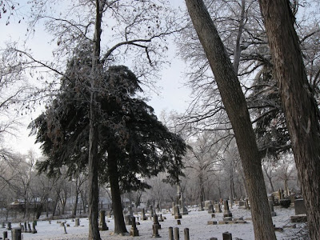The eastern hemlock has very small cones that are quite similar to those of the tamarck. It has limited commercial use for lumber, but its bark was once used as a source of tannin.
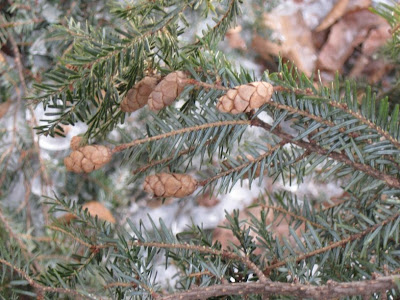A Yale University site says, "It is a poor Christmas tree because the leaves fall upon dying."
I prepared this post before Christmas. Rensselaer had a severe windstorm after Christmas that knocked the top off one of the two eastern hemlocks in Weston Cemetery. Here is all that is left of it.
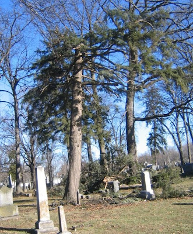I have found several hemlock on the south side of Milroy Avenue. Do you know where any others are in Rensselaer?

This blog reports events and interesting tidbits from Rensselaer, Indiana and the surrounding area.
Wednesday, December 31, 2008
Tuesday, December 30, 2008
The tree in the river
At the west end of Weston Cemetery and near the west end of Bicentennial Park, there is a large silver maple tree that has fallen across the Iroquois river. I expected it to be more of a dam than it seems to be--the water level below the blockage seems to be only a inch or two lower than the water level above. However, if we were having a really serious flood rather than a minor one, that extra inch or two might be a problem.
Now would not be a good time to be canoeing down the river. But even when the river is lower, the abundance of trees that fall into it can make navigation a challenge.
Now would not be a good time to be canoeing down the river. But even when the river is lower, the abundance of trees that fall into it can make navigation a challenge.
Christmas tree week: tree of life
Some of the evergreen trees are hard to identify. The spruce and the hemlock and the firs all have needles that look pretty much alike. But there are some that are distinctive, and those are the ones I can recognize. One of those is white cedar or arborvitae--tree of life.
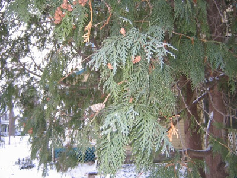Mostly they are grown as shrubs, and they are often pruned. But they also grow to be small trees, and here is an example by the Delos Thompson House on Front Street. There are a couple others in the neighborhood.
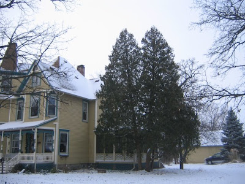There are larger examples in the oldest part of Weston Cemetery. The freezing rain of December 19 did a lot of damage to one of these fine old trees, and it may not not survive.
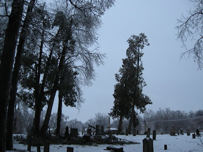I think the row of trees at Brookside park that is just to the west of the running track is arborvitae. Here they are after the same freezing rain. (Yes, I did take a lot of pictures after the ice came.)
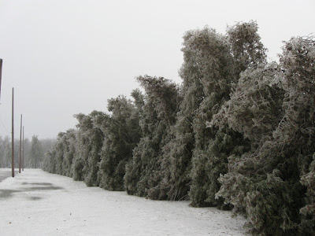Here is a close up. I guess it does not help much with identification, but I thought it was a pretty picture and that was reason enough to include it.
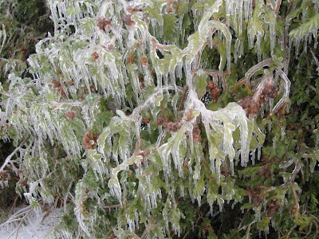I found another row of them near Merritt and McKinley that had considerable damage from the ice.
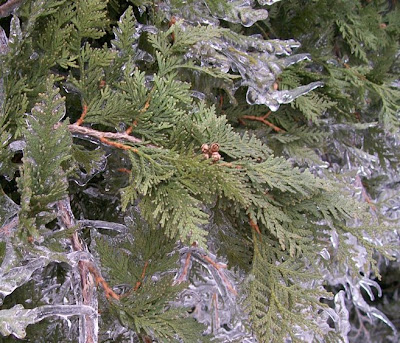The white cedar is native to extreme northeast Indiana, but you probably will see only planted specimens. (It is not sold commercially as a Christmas tree, so maybe I am cheating a little to include it this week. I am sure many outdoor white cedars are decorated with lights, so maybe I can justify including it with that use.)
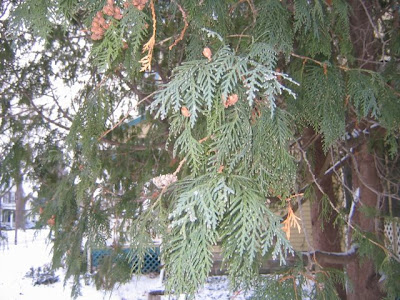Mostly they are grown as shrubs, and they are often pruned. But they also grow to be small trees, and here is an example by the Delos Thompson House on Front Street. There are a couple others in the neighborhood.
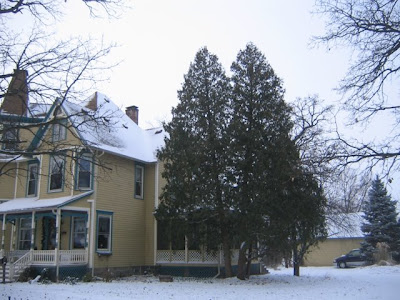There are larger examples in the oldest part of Weston Cemetery. The freezing rain of December 19 did a lot of damage to one of these fine old trees, and it may not not survive.
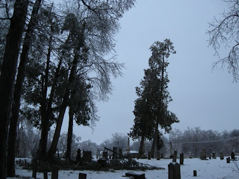I think the row of trees at Brookside park that is just to the west of the running track is arborvitae. Here they are after the same freezing rain. (Yes, I did take a lot of pictures after the ice came.)
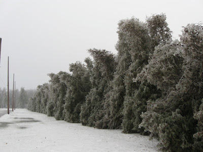Here is a close up. I guess it does not help much with identification, but I thought it was a pretty picture and that was reason enough to include it.
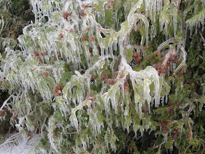I found another row of them near Merritt and McKinley that had considerable damage from the ice.
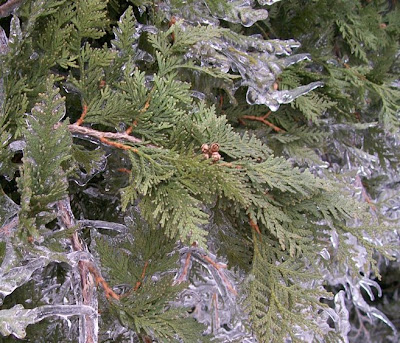The white cedar is native to extreme northeast Indiana, but you probably will see only planted specimens. (It is not sold commercially as a Christmas tree, so maybe I am cheating a little to include it this week. I am sure many outdoor white cedars are decorated with lights, so maybe I can justify including it with that use.)
Monday, December 29, 2008
Christmas tree week: Colorado spruce
This continues Christmas tree week on this blog, which started yesterday with the Norway spruce.
The Colorado Spruce, often called the blue spruce, is probably the most common evergreen you will see in Rensselaer, though most of them are not very big. It is not native to Indiana--as its name suggests, it comes from the Rocky Mountains. The biggest one I have seen in Rensselaer is at the corner of Jay and Monnett. There are hundreds of smaller versions around town. Usually the bluish tint to its needles makes it very easy to identify.
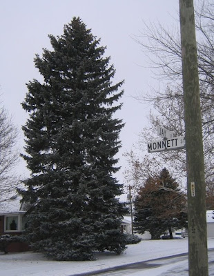The cones of the blue spruce are high on the tree. In the picture below, the two cones that are shown completely are blue spruce. The bottom of the large cone on the left is Norway spruce. Notice that it is smoother than and also larger than the cones of the blue spruce. Here is a site that has cone identification for some of the trees we have. And if you really want to get thorough with conifers, here is a good site.
 Yes, the blue spruce is used as a Christmas tree.
Yes, the blue spruce is used as a Christmas tree.
Update
On the Friday after Christmas, while I was out of town on an unexpected trip, Rensselaer had severe storms that toppled a number of trees. One of the trees down was a medium-sized blue spruce on Bunkum road just opposite Weston Cemetery. Until it is cut up, it gives an excellent look at a Colorado Blue Spruce.
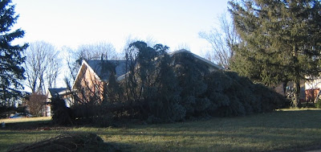
The Colorado Spruce, often called the blue spruce, is probably the most common evergreen you will see in Rensselaer, though most of them are not very big. It is not native to Indiana--as its name suggests, it comes from the Rocky Mountains. The biggest one I have seen in Rensselaer is at the corner of Jay and Monnett. There are hundreds of smaller versions around town. Usually the bluish tint to its needles makes it very easy to identify.
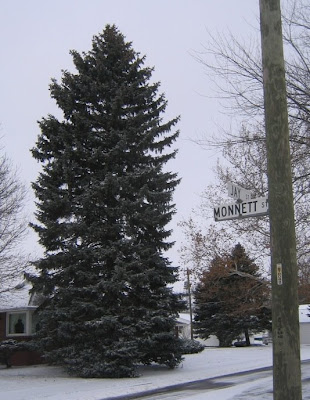The cones of the blue spruce are high on the tree. In the picture below, the two cones that are shown completely are blue spruce. The bottom of the large cone on the left is Norway spruce. Notice that it is smoother than and also larger than the cones of the blue spruce. Here is a site that has cone identification for some of the trees we have. And if you really want to get thorough with conifers, here is a good site.
Yes, the blue spruce is used as a Christmas tree.Update
On the Friday after Christmas, while I was out of town on an unexpected trip, Rensselaer had severe storms that toppled a number of trees. One of the trees down was a medium-sized blue spruce on Bunkum road just opposite Weston Cemetery. Until it is cut up, it gives an excellent look at a Colorado Blue Spruce.
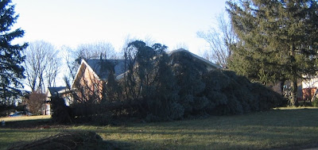
Sunday, December 28, 2008
Icy Christmas
On Christmas morning a small ice rink had formed on the Susan lot next to St. Augustine School. It was no surprise that a couple of youngsters found the ice enticing and decided to play on it.
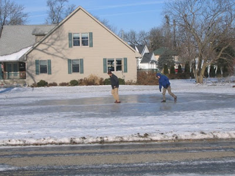And they found that ice is just as slippery this year as it was last year and the year before.
 The ice on the Susan lot and on the city streets is gone now, part of the flood water. The gaging station on the Iroquois River says the river is above flood stage.
The ice on the Susan lot and on the city streets is gone now, part of the flood water. The gaging station on the Iroquois River says the river is above flood stage.
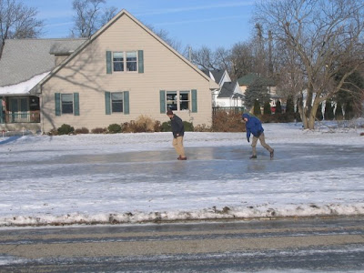And they found that ice is just as slippery this year as it was last year and the year before.
The ice on the Susan lot and on the city streets is gone now, part of the flood water. The gaging station on the Iroquois River says the river is above flood stage.
Christmas tree week: Norway spruce
This week I decided to write about trees that are used or maybe could be used as Christmas trees. I have already written about the eastern white pine. But there are other trees around Rensselaer that are grown for that purpose. In addition, winter is a good time to identify the conifers, while it is not such a good time to identify most non-conifers. We start with one of the most common of the conifers, the Norway spruce.
The Norway spruce is not native to Indiana. In fact, as the name suggests, it is not even native to the U.S., but it is widely planted both as a city tree and in forests. It is one of the most common evergreens in Rensselaer. There a number of very large trees, such as this one on the corner of College and Jackson.
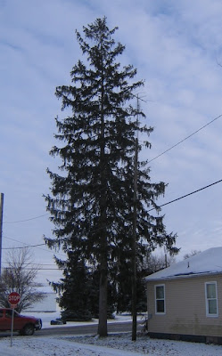Two things help identify this tree. One is the very large cones, which are three or four inches long. The other is the dropping branches on the older trees.
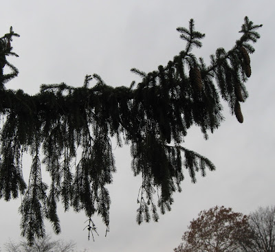
The Norway spruce is not native to Indiana. In fact, as the name suggests, it is not even native to the U.S., but it is widely planted both as a city tree and in forests. It is one of the most common evergreens in Rensselaer. There a number of very large trees, such as this one on the corner of College and Jackson.
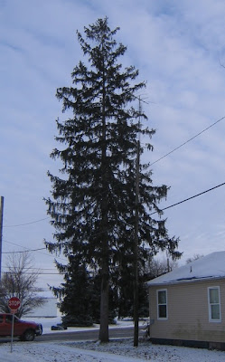Two things help identify this tree. One is the very large cones, which are three or four inches long. The other is the dropping branches on the older trees.
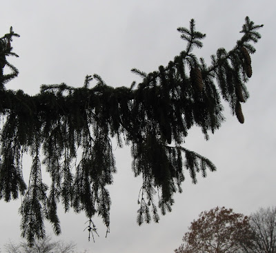
Saturday, December 27, 2008
More cool pictures
On the day of our ice storm, Dec 19, and for a few days after I took a lot of pictures because we do not get conditions like this too often. Naturally, I want to share them. Let us start with the human impact.
I found a couple of sheds that got hit by falling branches. This one was on Vine.
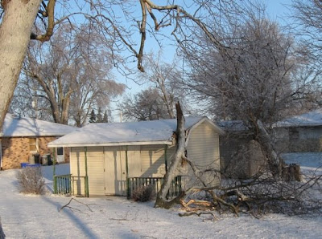And this on was on Jackson.
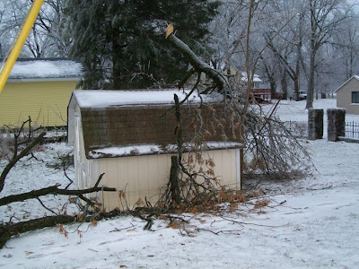Do you think bad road conditions might have had something to do with this damaged fence at Staddon Field?
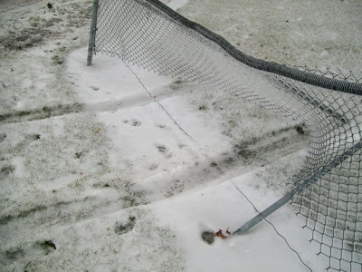All the broken branches kept the tree removal guys busy, even if it was mostly removing parts of trees. Here they are working at two houses on Abagail Street.

 Enough of people. Here is the court house from as seen from the post office.
Enough of people. Here is the court house from as seen from the post office.
Here is the College Street bridge decorated for the holidays.
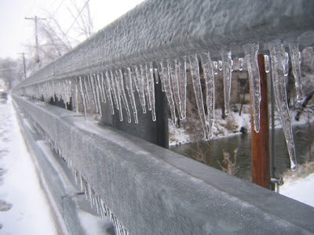Below is the hawthorn tree that is next to the post office on a bright sunny morning.
Here are bushes by Dr. Bausman's office on Front Street, also on a bright, sunny morning.
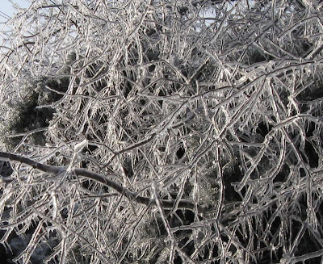I do not know what kind of berries these are, and I do not remember where I took the picture.
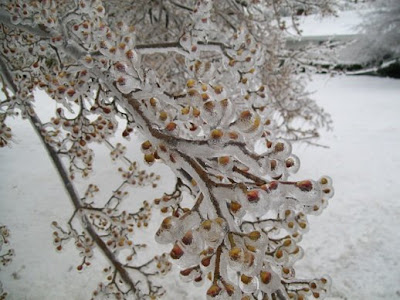Here are more pine needles.
This is a weeping willow on the north end of Abagail.
 I can tell from the seeds that this was a basswood. It was somewhere in the south part of town near Fleming.
I can tell from the seeds that this was a basswood. It was somewhere in the south part of town near Fleming.
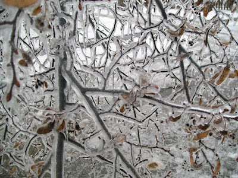Here is some kind of locust tree the northeast side of town.
 This is not another locust, but a redbud. The redbuds are easy to recognize in the winter if they still have their seed pods.
This is not another locust, but a redbud. The redbuds are easy to recognize in the winter if they still have their seed pods.
Are you tired of ice yet? Or do you want more? I took a lot of pictures.
I found a couple of sheds that got hit by falling branches. This one was on Vine.
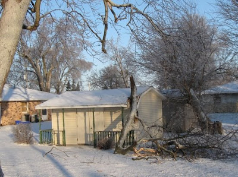And this on was on Jackson.
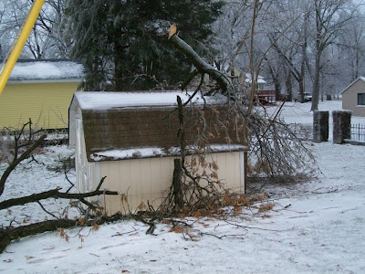Do you think bad road conditions might have had something to do with this damaged fence at Staddon Field?
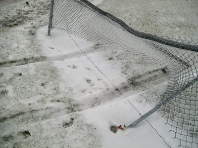All the broken branches kept the tree removal guys busy, even if it was mostly removing parts of trees. Here they are working at two houses on Abagail Street.
Enough of people. Here is the court house from as seen from the post office.Here is the College Street bridge decorated for the holidays.
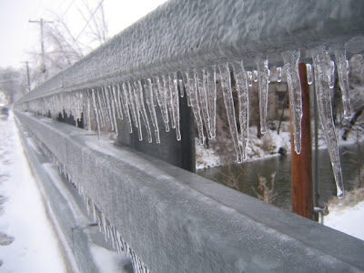Below is the hawthorn tree that is next to the post office on a bright sunny morning.
Here are bushes by Dr. Bausman's office on Front Street, also on a bright, sunny morning.
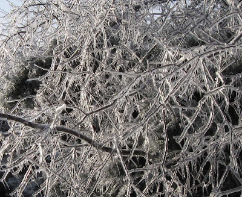I do not know what kind of berries these are, and I do not remember where I took the picture.
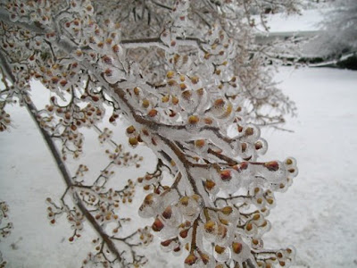Here are more pine needles.
This is a weeping willow on the north end of Abagail.
I can tell from the seeds that this was a basswood. It was somewhere in the south part of town near Fleming.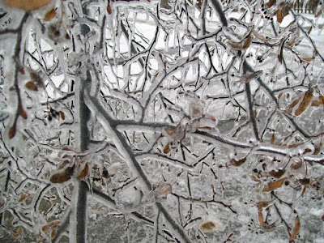Here is some kind of locust tree the northeast side of town.
This is not another locust, but a redbud. The redbuds are easy to recognize in the winter if they still have their seed pods.Are you tired of ice yet? Or do you want more? I took a lot of pictures.
Pears
Until this past fall I had never noticed all the decorative pear trees that have been planted. Now that I am looking for them, I see them everywhere. They are especially noticeable in the early winter because they lose their leaves very late if they lose them at all. Many still have their leaves when there is snow on the ground.
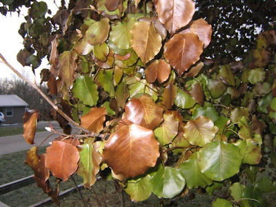Here is a large specimen about a mile out on Bunkum Road. There are also smaller examples closer to town, along the new addition to Weston Cemetery.
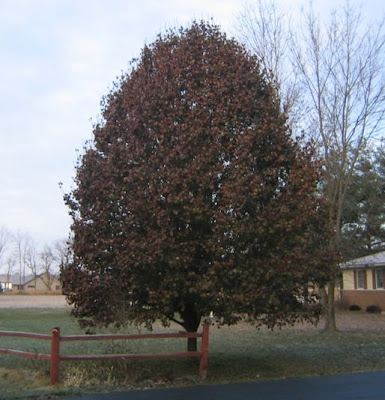Driving through Watseka, Illinois, I noticed that there were decorative pears planted for most of the length of the highway as it passed through town. And in a tree nursery on I-57 near Gillman, there were thousands of young ones growing. Have these pears become the new fashion in small trees?
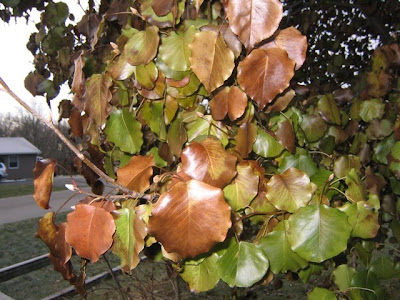Here is a large specimen about a mile out on Bunkum Road. There are also smaller examples closer to town, along the new addition to Weston Cemetery.
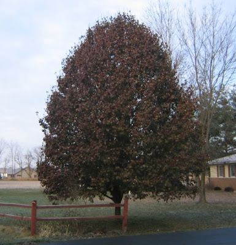Driving through Watseka, Illinois, I noticed that there were decorative pears planted for most of the length of the highway as it passed through town. And in a tree nursery on I-57 near Gillman, there were thousands of young ones growing. Have these pears become the new fashion in small trees?
Friday, December 26, 2008
Santa light
We admire Christmas decorations when they are elegant and we appreciate them when they are over-the-top. Sometimes we enjoy them because they are funny.
These two-dimensional characters of Mr. and Mrs. Claus on Front Street show a lighter side of Christmas decorating. I always think Mrs. Claus is a funny character. Here she and Santa are giving a friendly wave to those passing by.
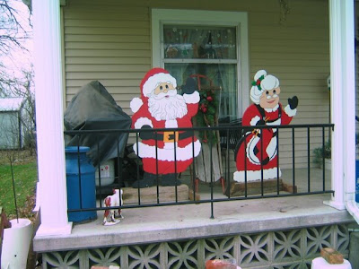In Houston's subdivision this tipsy snowman appears as if he had one too many the night before.
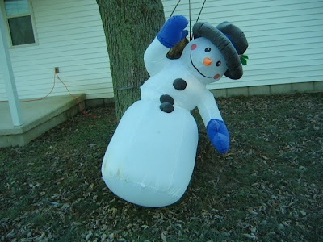These snowmen carolers seem to get around town. I was sure that I saw them on Grace Street, but here they are on Owen Street, and they even brought the trees with them. Well, if you are caroling, you are supposed to get around town, even if you are anchored.
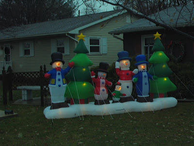When I saw these deer on Grace Street, I was not sure if they were Christmas decorations or deer decoys. Could they be both?
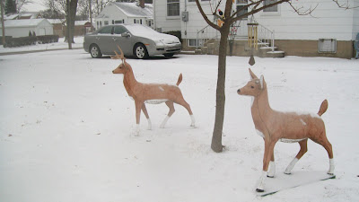It appears that someone on Rachel Street lynched Santa--he is swinging in the breeze. Maybe the intent was innocent--they probably thought of this as a big tree ornament. Or a piata.
On Milroy Avenue Santa is riding a polar bear. For some reason (Coca Cola ads?) people think of polar bears as kind and cuddly. Actually, polar bears consider humans as prey.
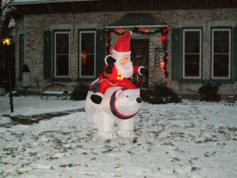And then there is this totally hip Santa on Fleming Blvd. This blow-up Santa more than any other shows the lighter side of Christmas decorating. Ride on, Santa.
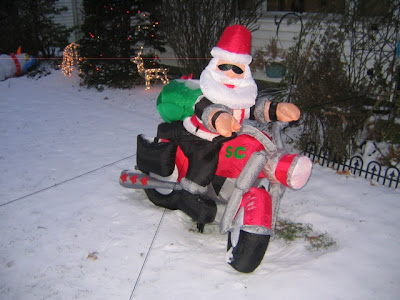
These two-dimensional characters of Mr. and Mrs. Claus on Front Street show a lighter side of Christmas decorating. I always think Mrs. Claus is a funny character. Here she and Santa are giving a friendly wave to those passing by.
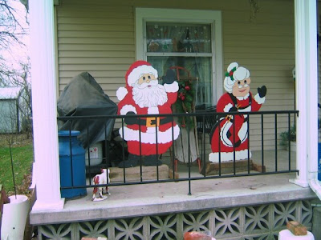In Houston's subdivision this tipsy snowman appears as if he had one too many the night before.
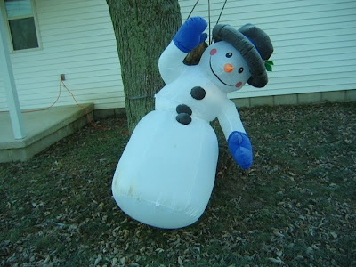These snowmen carolers seem to get around town. I was sure that I saw them on Grace Street, but here they are on Owen Street, and they even brought the trees with them. Well, if you are caroling, you are supposed to get around town, even if you are anchored.
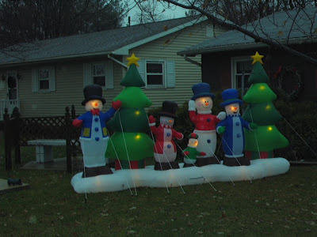When I saw these deer on Grace Street, I was not sure if they were Christmas decorations or deer decoys. Could they be both?
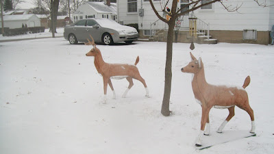It appears that someone on Rachel Street lynched Santa--he is swinging in the breeze. Maybe the intent was innocent--they probably thought of this as a big tree ornament. Or a piata.
On Milroy Avenue Santa is riding a polar bear. For some reason (Coca Cola ads?) people think of polar bears as kind and cuddly. Actually, polar bears consider humans as prey.
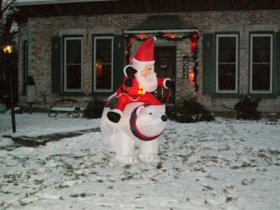And then there is this totally hip Santa on Fleming Blvd. This blow-up Santa more than any other shows the lighter side of Christmas decorating. Ride on, Santa.
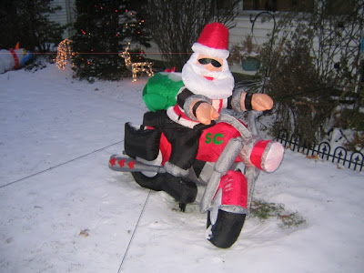
Thursday, December 25, 2008
Merry Christmas
Among all the Santas, Frosties, deer, sleighs, and other iconography of the Christmas holidays, there were a few lawns that displayed creche scenes. Today seems the right day to show them. The first was on Milroy Ave.
This one was on Grace Street. The addition of angels is a nice touch. I saw very few angels in the outdoor decorations.
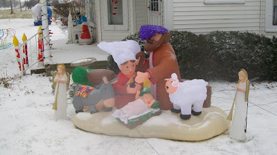This was on Angelica. It looks pretty much like the previous one, but its star is inflated.
I think this one was on Webster. A large and most impressive set, it was not easily viewable from the street.
And I think this one is on Rachel Street.
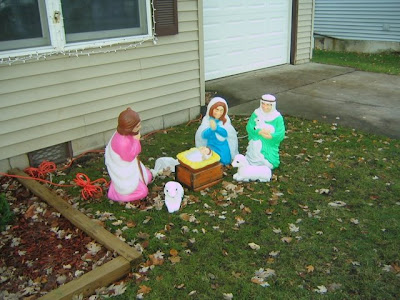Merry Christmas.
This one was on Grace Street. The addition of angels is a nice touch. I saw very few angels in the outdoor decorations.
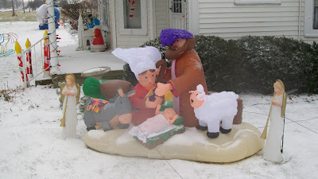This was on Angelica. It looks pretty much like the previous one, but its star is inflated.
I think this one was on Webster. A large and most impressive set, it was not easily viewable from the street.
And I think this one is on Rachel Street.
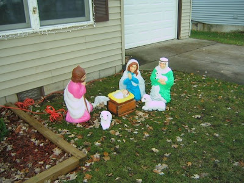Merry Christmas.
Wednesday, December 24, 2008
Silver linings
The freezing rain of December 19 did a lot of damage, but there was a silver lining. It also created great beauty. Some of our attempts to decorate for the holidays are based on the sorts of things we see when everything is coated with ice, even it we do not welcome the destructive side of the event.
 Here is a spruce tree in Milroy Park that already had Christmas lights, but now it has nature's own tinsel.
Here is a spruce tree in Milroy Park that already had Christmas lights, but now it has nature's own tinsel.
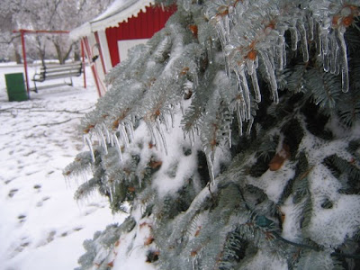We decorate trees with red ornaments. Here is one that nature has decorated.
 The wire in the fence at the softball field at Brookside Park was evenly coated. It was a very strange sight.
The wire in the fence at the softball field at Brookside Park was evenly coated. It was a very strange sight.
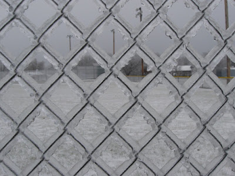This old house looks like it belongs in an old-fashioned Christmas story even without the ice covered branches. If you know your Rensselaer history, you recognize this as the Alfred Thompson House on Park Avenue built in 1878 or 1879. It is in the Second Empire style with a mansard roof.
Weston Cemetery, with its big old trees and weathered tombstones, often has camera-ready subjects.
That is a tombstone hiding behind the branches covered in icicles. The tilt to the icicles is not due to wind, but the to tree limb sagging after the ice buildup.
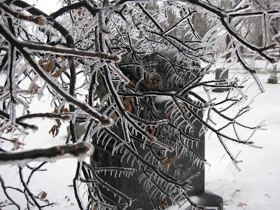This picture was taken near Lake Banet.
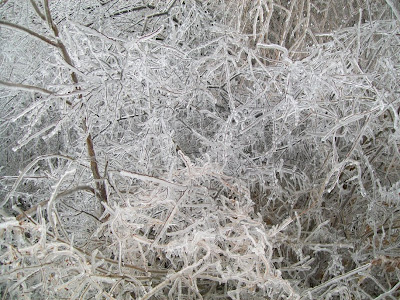I think this is a branch of a hackberry tree. It is in Iroquois Park.
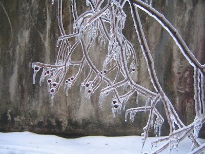And this is from Flat Iron or Memorial Park.
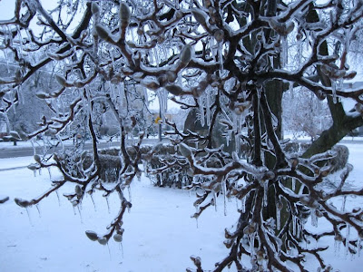Finally, oak leaves from a tree at SJC.
Here is a spruce tree in Milroy Park that already had Christmas lights, but now it has nature's own tinsel.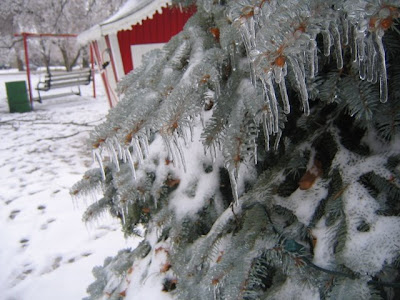We decorate trees with red ornaments. Here is one that nature has decorated.
The wire in the fence at the softball field at Brookside Park was evenly coated. It was a very strange sight.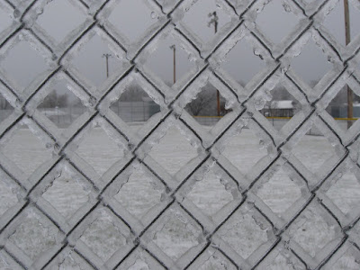This old house looks like it belongs in an old-fashioned Christmas story even without the ice covered branches. If you know your Rensselaer history, you recognize this as the Alfred Thompson House on Park Avenue built in 1878 or 1879. It is in the Second Empire style with a mansard roof.
Weston Cemetery, with its big old trees and weathered tombstones, often has camera-ready subjects.
That is a tombstone hiding behind the branches covered in icicles. The tilt to the icicles is not due to wind, but the to tree limb sagging after the ice buildup.
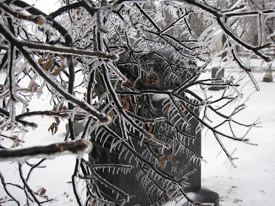This picture was taken near Lake Banet.
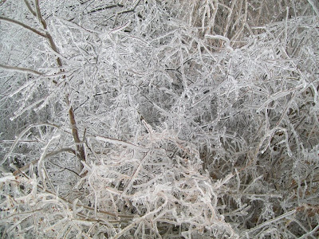I think this is a branch of a hackberry tree. It is in Iroquois Park.
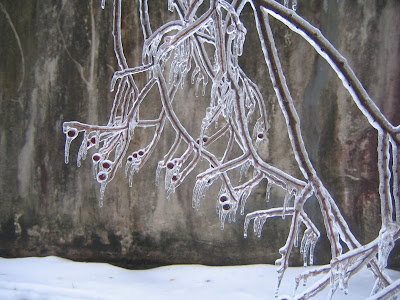And this is from Flat Iron or Memorial Park.
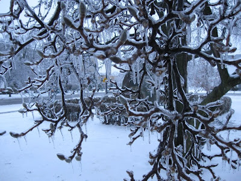Finally, oak leaves from a tree at SJC.
Subscribe to:
Posts (Atom)